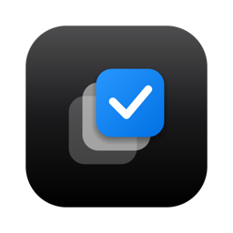
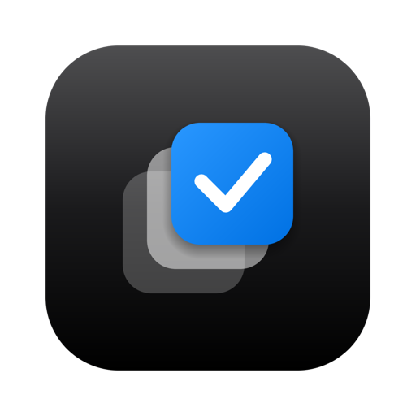

图标延续应用内「square.stack」的语义：三张层叠的 Skill 卡片自左下向右上递升，顶层以 Apple 蓝呈现并带白色勾选——即是「选择」本身。深黑底色呼应品牌的黑白章节节奏。


保留原有三栏结构，重建信息层级：Skill 获得独立视觉身份与状态徽章，详情页以「核心作用」为先，文件操作收敛为明确的确认动线。
「层叠卡片 + 选中」从 Logo 延伸到 App 图标，再延伸到界面内的 Skill 方块——一个母题贯穿品牌与产品，不引入第二套图形语言。
界面以黑白灰四级文字梯度组织层级，Apple 蓝仅出现于选中态、主按钮与「可更新」状态，每屏不超过两处实心强调。
三栏浏览器、分组设置页、胶囊按钮与圆形开关，全部遵循 macOS 14 的控件语义；危险操作红色仅用于「移到回收站」。